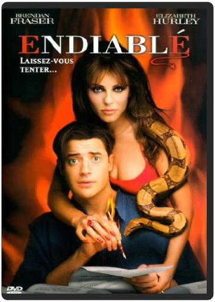
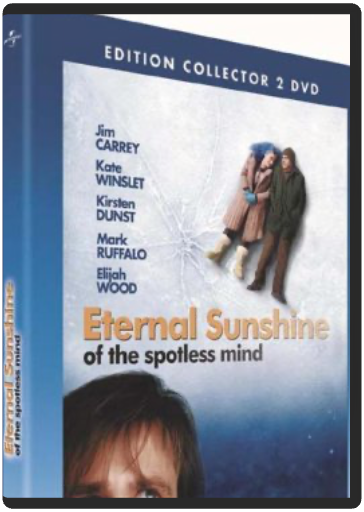

edward aux mains d'argenttim burton edward aux mains d'argenttim burton  Probablement le film le plus personnel de Tim Burton… Un inventeur crée Edward pour mettre fin à sa solitude. Mais il meurt avant d'avoir terminé sa créature, lui laissant des couteaux à la place des mains. Johnny Depp est époustouflant dans ce rôle et l'on verse une petite larme sur la dernière prestation de Vincent Price au cinéma… Un film admirable ! Le DVD est (pratiquement) à l'envi : les deux commentaires audio (Tim Burton et Danny Elfman) sont en VO/ST. La jaquette oublie un point important : la possibilité d'écouter la musique en 5.1 sur un canal séparé. De très beaux dessins de production signés Burton lui-même agrémentent l'ensemble. L'image est impeccable, et l'on regrette que la piste sonore française soit restée en Dolby surround. —Max Renne endiabléharold ramis Le diable, en la personne d'une somptueuse et sensuelle jeune femme, jette son dévolu sur un benêt malchanceux et gauche qu'il vient de sélectionner. Il lui propose d'exaucer sept vœux en échange de son âme. La bonne affaire se transforme cependant bien vite en cauchemar… Harold Ramis, réalisateur des déjà ludiques et drolatiques Un jour sans fin et autres Multiplicity, se sert ici du thème des vœux à exaucer comme d'un prétexte pour réaliser un film à sketches qui part dans toutes les directions. Et le spectateur d'attendre avec impatience et curiosité le résultat du prochain vœu, l'entraînant vers toujours plus de surprises, le long d'un fil conducteur simple et efficace. Le rire est omniprésent, généré par les situations improbables et loufoques à souhait, et servi par un Brendan Fraser au mieux de sa forme. —David Rault  epic - la bataille du royaume secretchris wedge epic - la bataille du royaume secretchris wedge Une adolescente se retouve plongée par magie dans un univers caché, inconnu de tous. Elle doit alors s'allier à un groupe de personnages singuliers et plein d'humour afin de sauver leur monde... et le nôtre !  equilibriumkurt wimmer equilibriumkurt wimmer Dans un univers futuriste et fasciste, les émotions et tout ce qui peut les provoquer, les livres, la musique, l'art, ont été bannis et frappés d'interdiction sous peine de mort. Preston est employé par le gouvernement afin de pourchasser les contrevenants ; à vrai dire, c'est même l'un des meilleurs. Jusqu'à ce jour où Preston oublie de s'administrer une dose de la puissante drogue qui annihile ses émotions… Mélange subtilement dosé de Fahrenheit 451 et de 1984 revisité gothique (tendance Matrix ou Underworld), Equilibrium emprunte à toutes ses influences en sachant sortir son épingle du jeu : le scénario se révèle vite audacieux et imprévisible, et les acteurs donnent beaucoup d'eux-mêmes pour rendre le film crédible et envoûtant. Christian Bale en clone de Neo, Sean Bean et Emily Watson auront tôt fait de convaincre les derniers réticents de la grande qualité de ce film à découvrir. —David Rault eternal sunshine of the spotless mind - édition collectormichel gondry Surgi du cerveau bouillonnant de Charlie Kaufman (Dans la peau de John Malkovich, Adapation, Human nature), Eternal Sunshine of the spotless mind est ce film ovni qui, à cent lieues du banal flash-back romantique fait exploser toutes les structures narratives conventionnelles au cours d’une véritable course contre l’éradication des souvenirs dans la mémoire de Jim Carrey. Visuellement, ce chassé-croisé labyrinthique se traduit par une mise en images aussi vertigineuse qu’hallucinogène. A n’en pas douter, ce noyau dur prendra toute sa saveur lors d’un second visionnage au calme (et au ralenti !), confortablement installé chez soi, pour une (re)lecture aussi utile qu’indispensable de la relation de ces deux êtres, l’histoire d’amour la plus originale que nous ait jamais offerte le septième art, avec cette éternelle question en point de mire : « Et si c’était à refaire ? »  evil dead - édition collectorsam raimi evil dead - édition collectorsam raimi Attention, film culte ! Evil Dead fut à sa sortie en 1983 un véritable choc cinématographique. Avec quelques bouts de bois, de ficelles, et beaucoup d'imagination, Sam Raimi imposait un film gore ultime, effrayant, et surtout, épatant. L'histoire tient en quelques lignes : un groupe d'amis passe quelques jours dans une cabane perdue dans les bois. Ils y découvrent le livre des morts et délivrent les forces du mal après une incantation Le futur réalisateur de Spider-Man a pu financer ce tournage – débuté en 1978 – grâce à l'argent emprunté à différents médecins et dentistes de sa ville natale. Fan de cinéma d'horreur, il décide de tout montrer à l'écran. Corps en décomposition, décapitation, amputation générale Evil Dead est un véritable catalogue trash de ce que peuvent nous montrer dix films d'horreur en un. Il est également le film du savoir-faire technique car Sam Raimi montre déjà l'énorme talent de réalisateur qu'il déploiera par la suite dans des productions à gros budget. Extrêmement divertissant, souvent drôle à force d'exagérations, Evil Dead a connu deux suites aussi amusantes l'une que l'autre. —Marc Maesen evil dead 2 - édition collectorsam raimi Ash, le héros malheureux du premier Evil Dead, se retrouve une nouvelle fois dans une cabane au fond des bois en compagnie de sa petite amie. Et, encore une fois, il va se mesurer aux forces du Mal… Réalisé en 1987, Evil Dead 2 a longtemps été considéré comme un remake friqué du premier opus de la légendaire série gore. Pourtant, beaucoup plus réactif, inventif, délirant, grand-guignolesque, il reste le meilleur épisode de la série. Bruce Campbell s'en donne visiblement à cœur joie en délirant chasseur de démons. Un film d'horreur totalement jouissif et débridé, qui ressort en édition spéciale comprenant un disque bourré de bonus : making of, interview exclusive du comédien Bruce Campbell, biographies, documentaires… Ainsi qu'un livret de 80 pages sur le film. —Jean-Pascal Grosso |


 Made with Delicious Library
Made with Delicious LibraryNancy, State zipflap congrotus delicious library Thomas, Julien